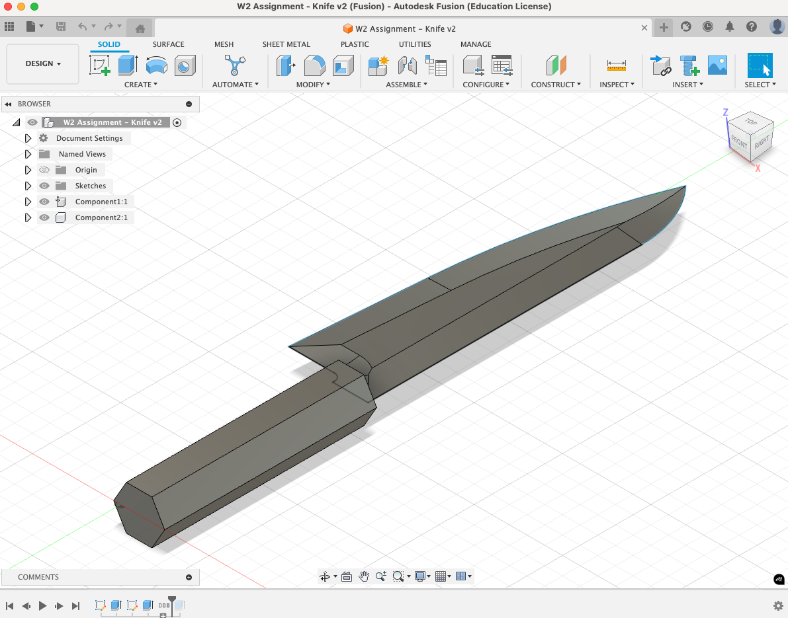
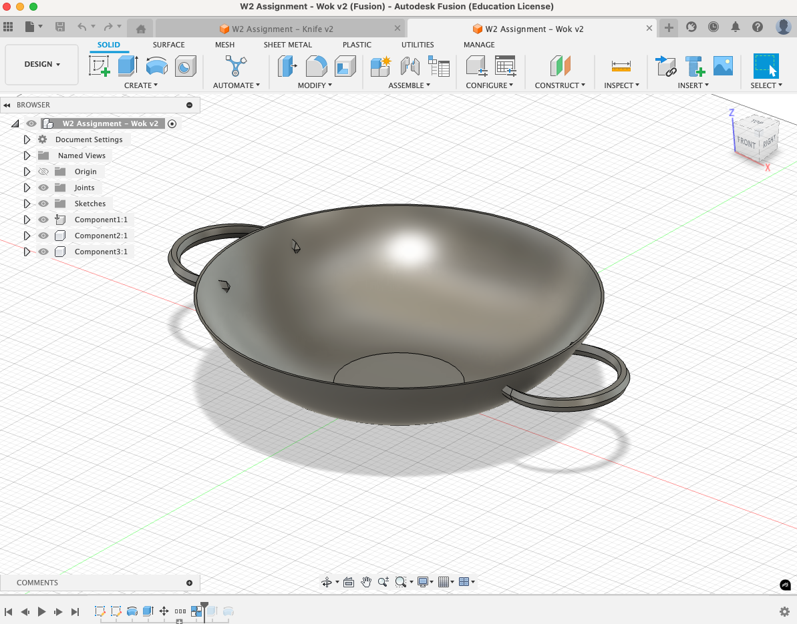
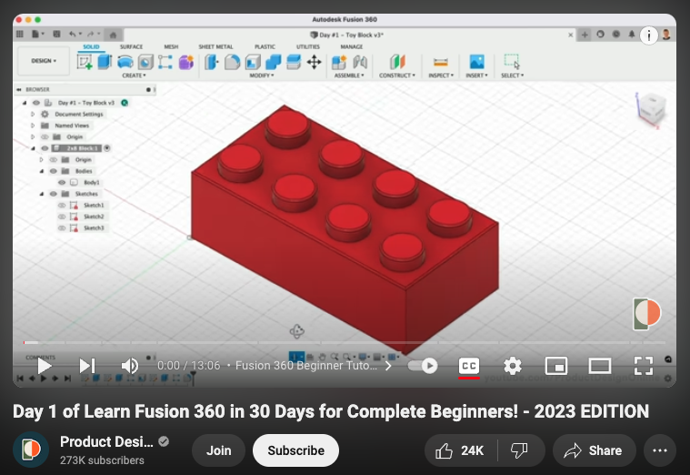
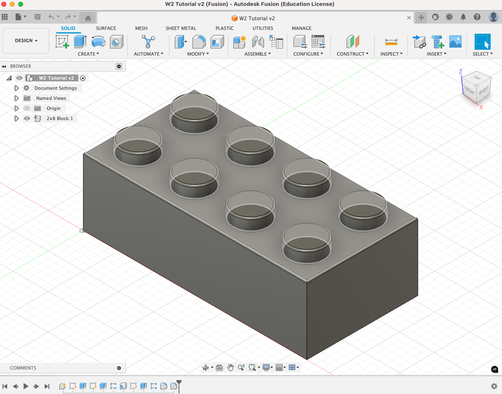
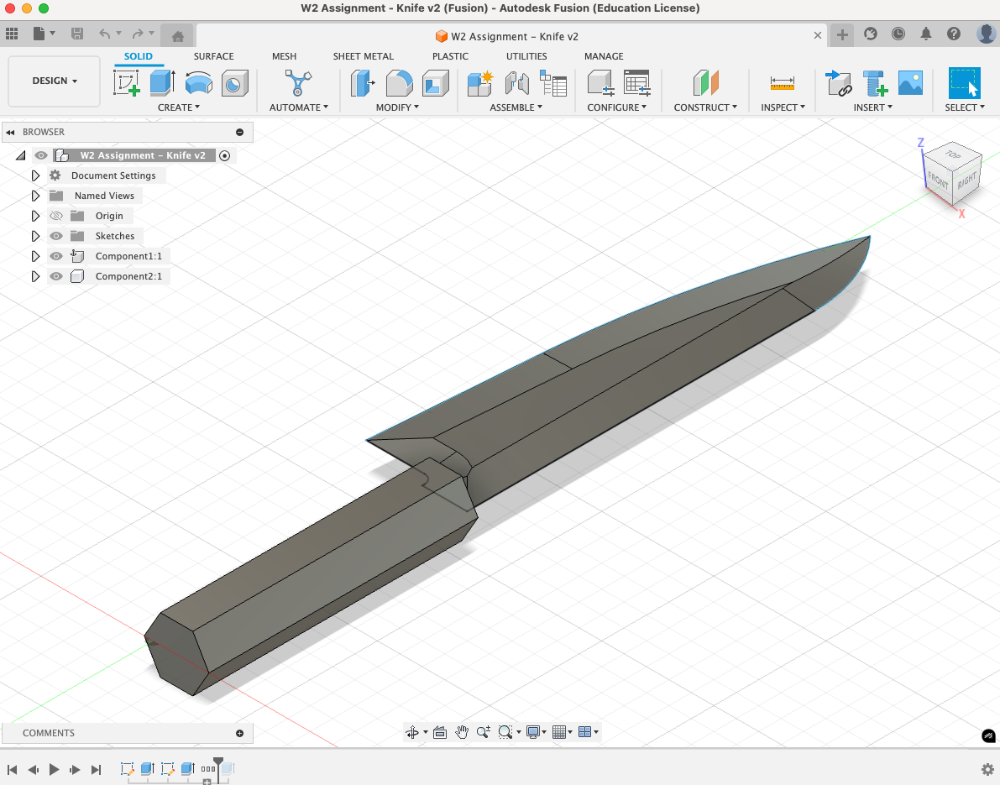
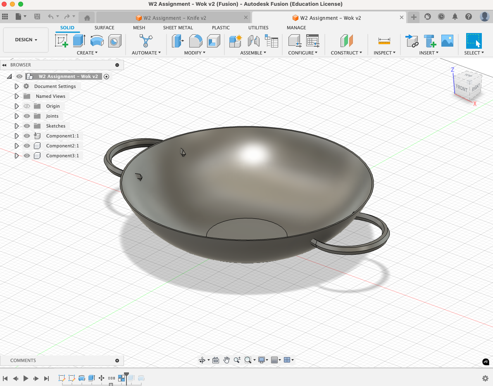

# measuring, modeling, and assembling
# --------------------------------------------------------------------------------
i the




/week two: 2D design & cutting
# fusion 360 tutorial
# --------------------------------------------------------------------------------
i choose to make the lego block from one of the recommended tutorials. this short tutorial covered a lot of most useful basics to fusion. my favourite new function, that I hadn't used before was shell, which hollows out a surface to a certain thickness. definitely will save this model for when we get to 3d printing. I foresee a lego paper weight.
tutorial 
completed model 
# measuring, modeling, and assembling
# --------------------------------------------------------------------------------
i the

